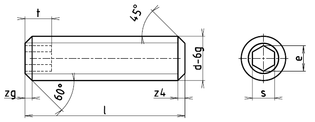
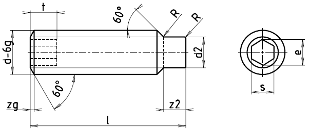
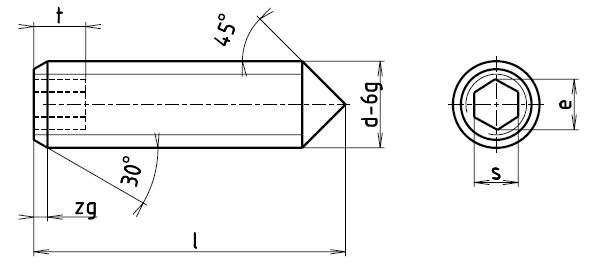

Příklad označení stavěcího šroubu s vnitřním šestihranem se závitem M5, délky l=12 mm:
b
| Závit d | M4 | M5 | M6 | M8 | M10 | M12 | (M14) | M16 | (M18) | M20 | (M22) | M24 |
|---|---|---|---|---|---|---|---|---|---|---|---|---|
| M8×1 | M10×1,25 | M12×1,25 | (M14×1,5) | M16×1,5 | ||||||||
| d2-h14 | 2,5 | 3,5 | 4 | 5,5 | 7 | 8,5 | 10 | 12 | 13 | 15 | 17 | 18 |
| d4 max. | 1,5 | 2 | 2,5 | 3 | 4 | 4 | 5 | 5 | 6 | 6 | ||
| e | 2,3 | 2,9 | 3,5 | 4,7 | 5,8 | 7 | 7 | 9,4 | 11,7 | 11,7 | 13,9 | 13,9 |
| R | 0,3 | 0,3 | 0,4 | 0,4 | 0,5 | 0,6 | 0,8 | 0,8 | 0,8 | 1 | 1 | 1 |
| s | 2 | 2,5 | 3 | 4 | 5 | 6 | 6 | 8 | 10 | 10 | 12 | 12 |
| t | 2,5 | 3 | 4 | 5 | 6 | 8 | 8 | 10 | 12 | 12 | 15 | 15 |
| z2+IT15 | 2 | 2,5 | 3 | 4 | 5 | 6 | 7 | 8 | 9 | 10 | 11 | 12 |
| z4+IT15 | 0,5 | 1 | 1 | 1 | 1,4 | 1,6 | 1,6 | 1,6 | 2 | 2 | 2,5 | 2,5 |
| z9 | 0,35 | 0,4 | 0,5 | 0,6 | 0,8 | 1 | 1 | 1,1 | 1,2 | 1,2 | 1,2 | 1,5 |
| Délka l | Přibližná hmotnost 1000 šroubů podle ČSN 02 1187 [kg] | |||||||||||
| 5 | 0,30 | |||||||||||
| 6 | 0,38 | 0,56 | ||||||||||
| 8 | 0,53 | 0,80 | 1,2 | |||||||||
| 10 | 0,68 | 1,04 | 1,6 | 2,8 | ||||||||
| 12 | 0,83 | 1,28 | 1,9 | 3,4 | 5,3 | |||||||
| 14 | 0,98 | 1,52 | 2,3 | 4,0 | 6,3 | 9 | ||||||
| 16 | 1,13 | 1,76 | 2,7 | 4,7 | 7,3 | 10 | ||||||
| 20 | 1,43 | 2,24 | 3,4 | 6,0 | 9,4 | 13 | 19 | 22 | ||||
| 25 | 2,84 | 4,2 | 7,6 | 12,0 | 17 | 24 | 30 | 35 | ||||
| 30 | 5,1 | 9,2 | 14,0 | 20 | 29 | 37 | 43 | 56 | ||||
| 35 | 6,0 | 11,0 | 17,0 | 24 | 34 | 44 | 51 | 67 | 78 | |||
| 40 | 6,9 | 12,0 | 22,0 | 28 | 39 | 50 | 60 | 77 | 90 | 109 | ||
| 45 | 7,8 | 14,0 | 24,0 | 31 | 44 | 57 | 68 | 88 | 103 | 124 | ||
| 50 | 17,0 | 27,0 | 35 | 49 | 64 | 76 | 96 | 116 | 139 | |||
| 60 | 34,0 | 39 | 59 | 77 | 93 | 119 | 142 | 169 | ||||
| 70 | 49 | 68 | 90 | 106 | 140 | 167 | 199 | |||||
| 80 | 57 | 78 | 104 | 126 | 160 | 193 | 229 | |||||
| 90 | 88 | 117 | 142 | 181 | 218 | 259 | ||||||
| 100 | 130 | 159 | 202 | 244 | 289 | |||||||